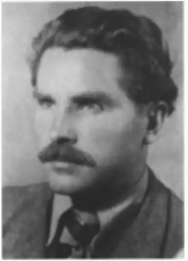

Щербак Микола (Мішалов Микола Іванович) — український поет, літературознавець, журналіст.
(26) листопада 1914 — 7 червня 2010)
Народився Микола Щербак (справжнє прізвище Мишалов Микола Іванович) 26 листопада 1916 року у сім'ї хліборобів села Топильна на Шполянщині. Пізніше, згадуючи свій отчий край, своїх батьків та своє дитинство, поет писав: "Рідна Шевченкова земля. З дитинства й раннього юнацтва припадаю до її лона. Чарівна природа. Мамина пісня і казка. Батькове й братове добре слово. "Кобзар" – як Євангеліє на столі. Шевченкові вірші й поеми напам'ять! Кирилівка (старші люди казали Керелівка) – рукою подати. Земля диха Шевченком!..." Саме цей світ краси й любові до рідного слова став тим благодатним підґрунтям, на якому зродився і розцвів поетичний талант М. Щербака. Однак про повний розквіт цього таланту, про вільний вияв своїх думок у пору юності поета не могло бути й мови, адже то були сумновідомі 30-ті роки. Потім у його життя, як і у життя багатьох українців, увірвалася війна. З перших її днів він потрапляє на фронт, потім – полон, німецькі концентраційні табори. Після війни поет залишається на Заході, проживаючи в одному з таборів для переміщених осіб у Баварії й займаючись викладанням української мови та літератури в українській гімназії. У 1947 р., в Мюнхені виходить друком його перша книга поезій "Вітри над Україною". У 1950 році Микола Щербак переїжджає до Сполучених Штатів Америки, оселяючись у штаті Флорида. У перші роки свого заокеанського життя поет працює робітником на фабриці, потім переходить на журналістську роботу, далі займається вчителюванням у школах українознавства, впродовж усього часу, не забуваючи про поезію. У 1953 р. у світ виходить друга поетична книжка "П'янкий чебрець", у 1959 р. – збірка "Багаття", а у 1982 р. – "Пахощі суцвіття". Свого часу М. Щербак, будучи активним дописувачем одного з найпопулярніших у США дитячих українських журналів "Веселка", багато писав для дітей. У 1960 р. з'явилася поетична збірочка "Віршована абетка" художньо оформлена відомим заокеанським митцем Едвардом Козаком, яка в ту пору стала таким собі підручником-буквариком для багатьох українських дітей. Пізніше, у 1969 р., вийшла друком його друга поетична книжка для дітей "Волошки", проілюстрована художником Богданом Певним. Своєрідним підсумком літературної діяльності Миколи Щербака стала книга його вибраних поезій "Чебрець", видана у 1991 р., до якої увійшли найкращі твори поета. Автор збірок: "Вітри над Україною" (1947); "П'янкий чебрець" (1953); "Багаття" (1959); "Пахощі суцвіття" (1992); "Чебрець" (1991). Поема "Шлях у вічність" (1954). Твори для дітей: "Абетка" (1960); "Волошки" (1969); "Пахощі суцвіття" (1982); "Чебрець: Вибрані поезії" (1991).